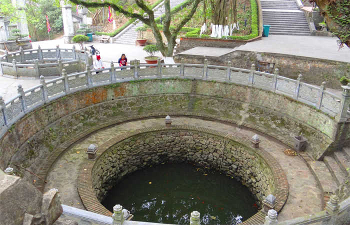
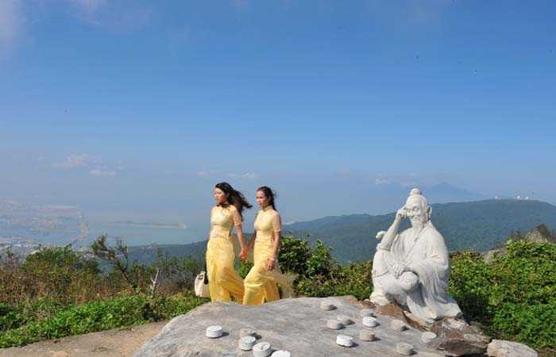
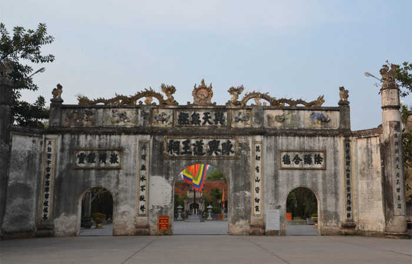
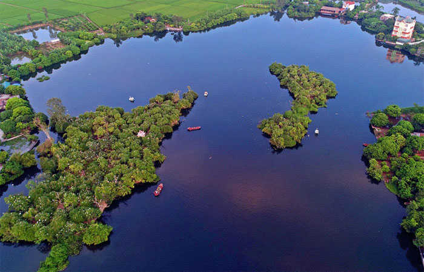
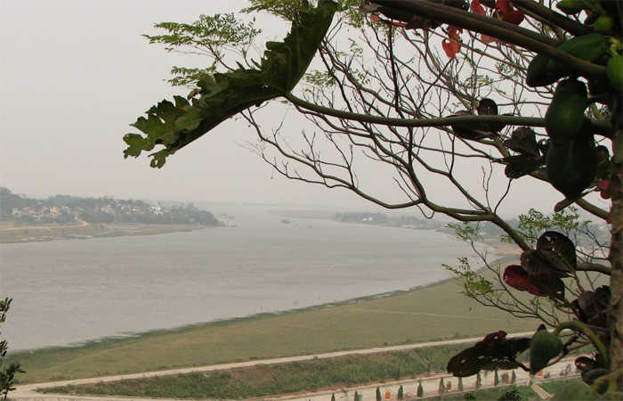
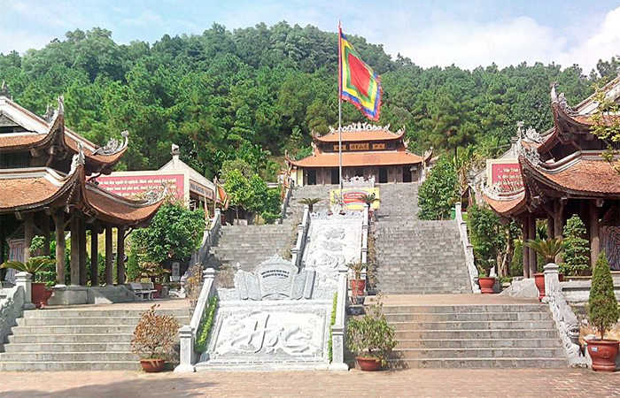
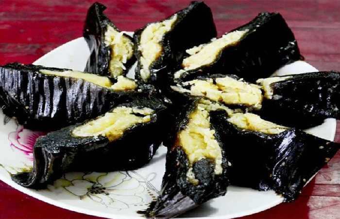
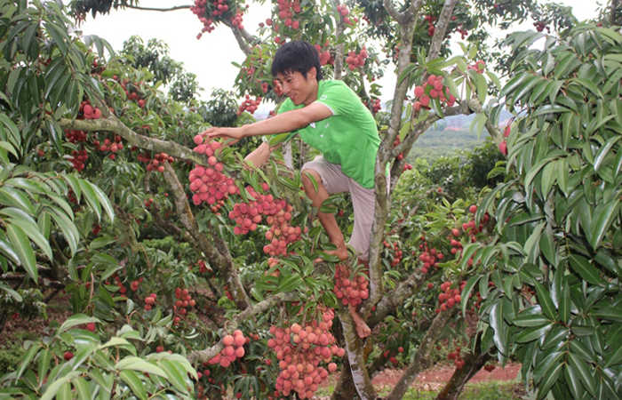

Hải Dương là một tỉnh khá gần với thủ đô, với nhiều đền chùa, mang vẻ đẹp trường tồn theo thời gian. Du lịch Hải Dương ngày một cuốn hút du khách đến khắp nơi. Hải Dương không chỉ nổi danh với di tích Côn Sơn – Kiếp Bạc, mà còn nhiều công trình văn hoá giá trị. Bạn đang có ý định du lịch Hải Dương, cần chuẩn bị kỹ lưỡng những kiến thức về địa điểm thăm quan, nghỉ ngơi, ăn uống.
Trong bài viết này, chúng tôi sẽ chia sẻ cho các bạn những kinh nghiệm du lịch Hải Dương do những chuyên gia, phượt thủ, du khách và chia sẻ lại.
I. Giới Thiệu Tổng Quan Về Hải Dương.
Hải Dương được xem là một tỉnh rất hiền hoà với cái tên ít nhiều gợi liên tưởng với biển khơi. Thật ra Hải Dương nằm trong vùng đất liền, không có bờ biển nhưng có nhiều khu phát triển nông nghiệp.
Trong quá khứ, đây là vùng đất lịch sử, hậu cứ của quân dân ta trong nhiều thời kỳ kháng chiến đánh bại quân xâm lược tới từ phương Bắc. Hải Dương còn là vùng đất phát triển văn hoá và Phật học.
Hải Dương có Côn Sơn – kiếp Bạc là khu di tích văn hoá lịch sử quan trọng. Xưa kia, Ức Trai Nguyễn Trãi về trí sĩ nơi đây. Hải Dương với Chí Linh còn âm vang những chiến công dũng mãnh của Bình Định Vương Lê Lợi, người anh hùng áo vải đất Lam Sơn. Nhiều danh nhân như Trần Nguyên Đán, mạc Đĩnh Chi, Phạm Sư Mạnh, Hải Thượng Lãn Ông Lê Hữu Trác cũng để lại tên tuổi sự nghiệp ở vùng đất này.
Hải Dương nằm ở trung tâm châu thổ sông Hồng là vùng đất yên tĩnh, giàu đẹp, được thiên nhiên ưu đãi với sông nước, núi rừng như tranh vẽ và đất đai hoa màu tươi tốt,m thuộc mạn Đông – Đông bắc đồng bằng Bắc bộ.
II. Thời Điểm Lý Tưởng Để Đi Du Lịch Hải Dương.
Hải Dương là một tỉnh có nhiều di tích lịch sử, thích hợp cho từng sở thích của du khách, bạn có thể đến thăm quan vào từng thời điểm trong năm. Nhưng thông thường du khách vẫn đến đây vào mùa xuân và mùa hè.
1. Mùa Xuân:
Thông lệ sau tết âm lịch cũng là thời điểm trên khắp huyện, xã, tp Hải Dương có diễn ra một số lễ hội đầu xuân thu hút như:
– Lễ hội Côn Sơn – Kếp Bạc (ngày 10/1 lịch âm), lễ hội đặc sắc này diễn ra tại khu danh thắng Côn Sơn và đền Kiếp bạc thuộc tp Chí Linh.
– Lễ hội đền Yết Kiêu vào ngày 15/1 âm lịch tại làng Hạ Bì xã Yết Kiêu, huyện Gia Lộc;
– Lễ hội đền Cao diên ra ngày 22 – 24/1 âm lịch tại xã An Lạc, tp Chí Linh.
– Lễ Hội Tuần Tranh diễn ra vào ngày 14/2 âm lịch tại thông Thanh Xuyên, xã Đồng Tâm, huyện Ninh Giang.
2. Mùa Hè.
Vào thời điểm trung tuần tháng 5 Dương lịch, lúc này vải thiều tại Thanh Hà đang vào mùa thu hoạch, du khách đến lúc này sẽ được thoả thuê thưởng thức những quả vải ngon ngọt, tươi ngay tại vườn của các hộ gia đình.
III. Hướng Dẫn Đi Đến Hải Dương.
Là địa tỉnh thành đang thu hút du lịch, với hạ tầng đầu tư hiện đại. Từ Hà Nội có thể đến với Hải Dương bằng nhiều phương tiện khác nhau như: Xe máy, ô tô, xe khách, xe bus…
1. Nếu du khách đang ở Hà Nội muốn đi xe máy có thể chọn 1 trong 2 tuyến để đến Hải Dương như:
Tuyến 1: Từ nội thành thủ đô – đi đường Tôn Đức Thắng – xã Đàn – Trần Khắc Chân và Nguyễn khoái – quốc lộ 1A tại Lĩnh Nam. Đi 21,6km dọc theo QL5B/ĐCT04 đến QL38B tại Gia Lộc. Đi 54,5km du khách di chuyển trên đường QL5B/DDCT04 QL38B – QL 37 – Trường Chinh – Ngô Quyền đi 11km là tới Hải Dương.
Tuyến 2: Ngắn hơn chỉ tầm 59,8km. Từ Hà Nội – đường Nguyễn Văn Linh/QL5 tại Phúc Đồng Từ Tôn Đức Thắng, xã Đàn, Trần Khắc Chân, Nguyễn Khoái – Cầu Vĩnh Tuy, tiếp tục đi 11,9km rẽ vào đường Nguyễn Văn Linh/QL5 tiếp QL5 được 18,5km thẳng 3,1km, đường Nguyễn Lương Bằng tới Ngô Quyền, Hải Dương.
2. Tàu Hoả.
Du khách tại thủ đô có chỉ cần tốn tầm 40 – 60k vnđ, tuỳ loại ghế ngồi. Với thời gian chỉ tầm 1h30 phút là có thể đến Hải Dương. Mỗi ngày tại ga Long Biên có 4 chuyến hành trình đến Hải Dương, bạn có thể theo dõi trên các phương tiện thông tin website của hãng đường sắt. Là một phương tiện an toàn, tiết kiệm, bạn có thể mang theo xe máy để tiện cho việc đi phượt.
3. Xe Buýt.
Là hình thức di chuyển rẻ nhất mà nhiều bạn sinh viên, học sinh đã lựa chọn để đi đến Hải Dương. Hiện có tuyến xe buýt số 202, khởi hành từ bến xe Gia Lâm, Hà Nội đi đến bến xe Tp Hải Dương. Bạn chỉ cần tốn tầm 20 – 30k vnd, những chuyến đi của xe buýt 202 tần suất 15 – 20 phút/chuyến.
Với du khách ở tỉnh khách có thể đi theo một số con đường sau để đến Hải Dương.
– Từ Bắc Ninh, phía Tây có đường 18 qua Phả Lại, tới Chí Linh (tới ngã 3 sao Đỏ qua Quảng Ninh). Đường thứ 2 cũng từ Bắc Ninh theo quốc lộ 5 qua Cẩm Giàng tới thành phố Hải Dương.
– Từ Hưng Yên, phía Nam có đường 381 vào Thanh Miện.
– Từ Hải Phòng, phía Đông Nam theo đường 10 tới đường 386 đến Tứ Kỳ thẳng lên thành phố Hải Dương. Quốc lộ 5 vào Kim Thành.
– Từ Quảng Ninh, phía Đông theo đường 18 qua Sao Đỏ vào Chí Linh.
– Từ Bắc Giang, phía Bắc theo đường 37, xuống Sao Đỏ vào Chí Linh.
IV. Khách Sạn Hải Dương Lý Tưởng Cho Du Khách.
Công việc đầu tiên với mọi du khách khi đến với Hải Dương là tìm về khách sạn để nghỉ ngơi, ăn uống. Để tiện cho việc thăm quan theo kinh nghiệm của Du Lịch Việt, bạn nên chọn những khách sạn, nhà nghỉ tại khu vực trung tâm thành phố hoặc gần các điểm di tích lịch sử để tiện cho việc khám phá của mình.
Dưới đây là một trong những khách sạn chất lượng cao được đông đảo du khách yêu thích.
1. Khách Sạn Nam Cường.
Là khách sạn chuẩn 4 sao, toạ lạc tại địa chỉ Số 10, Đại lộ 30-10 Thành Phố Hải Dương, gần trung tâm thương mại, cảnh quang thiên nhiên nơi đây khá đẹp, quang cảnh đồng xanh ngát, liền kề các tiện ích sân bay quốc tế, di sản văn hoá,…
Nam Cường có đầy đủ tiện nghi phục vụ cho du khách như câu lạc bộ thư giản, giải trí, chăm sóc sức khoẻ, phòng mát xa, sân golf, sân tennis, 31 phòng trị liệu, sự bài trí nhiều thiết bị hiện đại, đa dạng, chuyên nghiệp sẽ làm hài lòng mọi du khách.
Giá khách sạn tầm 2.000.000 đến 2.300.000 VNĐ/phòng/ngày.
2. Khách Sạn Sao Đỏ.
Là khách sạn thiết kế theo chuẩn 3 sao. Toạ lạc tại 119, Nguyễn Trãi, p Sao Đỏ, thị xã Chí Linh. Vị trí khá đẹp nằm trên đường giao thông huyết mạch Hà Nội – Hải Phòng – Quảng Ninh, nơi có những di sản tự nhiên thu hút du khách.
Khách sạn Sao đỏ cao 11 tầng gồm 50 phòng bài trí sang trọng, kiến trúc truyền thống kết hợp hiện đại một cách hài hoà, chắc chắn sẽ làm hài lòng du khách.
3. Khách sạn Lotus Hải Dương
Là một khách sạn bình dân, toạ lạc tại địa chỉ số 447 Trường Chinh, phường Thanh Bình, tp Hải Dương. Với mức giá tầm 530k – 650k/phòng/ngày, nhưng sự tiện ích của khách sạn Lotus Hải Dương luôn làm hài lòng du khách.
4. Là sự lựa chọn của nhiều bạn phượt thủ, bởi giá cả ở đây nhẹ hơn, quan trọng là bạn cần tìm được những nhà nghỉ chất lượng.
Hiện ở Hải Dương có nhiều nhà nghỉ ở khu vực dân cư đông đúc, tiện bề đi lại, việc này giúp cho các bạn có thể xếp một lịch trình tối ưu nhất giá cả chỉ tầm 150k – 350k vnđ/phòng. Bạn có thể lựa chọn một vài nhà nghỉ tiêu biểu.
– Nhà khách hồ Côn Sơn, toạ lạc tại Cộng Hòa, tx Chí Linh, đt: 0320 3882982
– Nhà khách Quân khu 3. Toạ lạc tại: số 214 – Nguyễn Trãi 2 – Thị trấn Sao Đỏ – Tx Chí Linh, điện thoại (0320) 388 2289.
V. Địa Điểm Du Lịch Hải Dương Không Thể Bỏ Qua.
Sau khi đã có nơi ăn, chốn ở ổn định, sáng hôm sau du khách có thể an tâm hành trình khám phá vùng đất mới. Dưới đây là trong số những địa danh du lịch Hải Dương không thể bỏ qua.
1. Di Tích Danh Thắng Côn Sơn.
Khi nhắc đến du lịch Hải Dương thì nhiều du khách sẽ nghĩ ngay đến di tích danh thắng Côn Sơn, di tích gắn liền với cuộc đời nhiều địa danh lịch sử nổi tiếng. Dưới thời Trần đây là một trong 3 trung tâm chính của thiền phái Trúc Lâm.
Nhiều du khách thích đến đây thăm quan bởi di tích nằm giữa một khung cảnh hùng vĩ, núi non, trùng điệp, hài hoà với cảnh chùa tháp, rừng thông, khe suối, tất cả đã tạo nên một khung cảnh thiên nhiên tuyệt đẹp làm say đắm mọi du khách.
2. Chùa Côn Sơn.
Là một ngôi chùa cổ nổi tiếng, được xây dựng vào đời Trần, dưới chân núi Côn Sơn hùng vĩ. Theo sử sách ghi chép lại, khi vừa mới xây thì ngôi chùa này có quy mô rộng lớn, tráng lệ. Nhưng trải qua bao năm bị sự tàn phá của chiến tranh và thời gian thì hiện chùa chỉ còn lại một ngôi chùa nhỏ dưới những tán cây cổ thụ.
Một khi đến núi Côn Sơn du khách sẽ được chiêm ngưỡng vẻ đẹp cổ kính của ngôi chùa. Với không gian thanh bình, tĩnh lặng xung quanh chùa Côn Sơn khiến cho tâm hồn người lữ khách trở nên nhẹ nhõm thư thái.
3. Giếng Ngọc.

Là một địa điểm thăm quan nổi tiếng tại Hải Dương, giếng Ngọc nằm tại sườn núi Kỳ Lân.
Sự hình thành của giếng nước gắn liền với những truyền tích vô cùng kỳ bí. Tương truyền giếng này trước đây được thần linh ban cho một nguồn nước quý giá. Giếng nước trong vắt, khi uống vào sẽ khiến cho cơ thể trở nên cường tráng, khoang khoái, dễ chịu.
Sự quý giá của giếng đã được người xưa đặt tên là giếng Ngọc và ngày nay giếng nước được lấy từ đây dùng để làm nước thờ cúng tại chùa.
4. Bàn Cờ Tiên.

Là một địa điểm thăm quan lý thú, nằm cạnh chùa Côn Sơn. Để được tận mắt trông thấy địa danh huyền bí này du khách phải bước trên 600 bậc đá, cao 200m. Bàn Cờ Tiên ở đây thực ra là một phiến đá to, bằng phẳng. Đứng tại vị trí này bạn có thể thu vào tầm mắt khung cảnh hùng vĩ, hữu tình tại núi Côn Sơn.
5. Đền Kiếp Bạc.

Nói về ngôi chùa nổi tiếng tại Hải Dương thì không thể không nhắc đến đền Kiếp Bạc. Đây là ngôi đền tại phường Hưng Đại, thị xã Chí Linh, tỉnh Hải Dương, cách núi Côn Sơn tầm 5km.
Sự cuốn hút du khách đến thăm quan, vãn cảnh đền Kiếp Bạc bởi nơi đây được bao phủ bởi những dãy núi cao hùng vĩ, tạo nên một không gian tươi đẹp, thơ mộng và thanh bình. Theo ghi chép sử sách thì trước đây tướng quân Trần Hưng Đạo đã cho đóng quân tại nơi này.
6. Đảo Cò Chi Lăng.

Cách thành phố Hải Dương tầm 25km có một đảo cò, nằm ở xã Chi Lăng Nam, huyện Thanh Miện. Hàng vạn con cò đã quy tụ và trú ngụ trên một hòn đảo nhỏ nằm giữ hồ nước rộng chừng 30 mẫu.
Họ hàng nhà cò rất đông đúc, vui mắt, náo nhiệt, nào là cò trắng, cò lửa, cò bộ, cò ruồi, cò đen, cò hương, cò nghênh, cò ngang và kể cả diệc. Cũng có hàng ngàn con vạc và các loại chim quý như bồ nông, le le, mòng két.. ngày ngày cùng nhau “giao ca”, “xập sận”, cuộc “giao ca” lúc hoàng hôn mỗi ngày giữa cò và vạc trong cuộc mưu sinh theo định lệ tự nhiên rất là lý thú.
7. Bến Bình Than.

Đây là tên của một bến sông trên Lục Đầu Giang ở làng Trần Xá, thị xã Chí Linh, một di tích nổi tiếng liên quan đến một sự kiện lịch sử. Vào năm 1282, khi nhà Nguyên Mông sắp cử đại binh sang xâm lược nước ta, vua Trần Nhân Tông ngự ra bến nước này họp các vương hầu và các quan triều đình bàn cách giữ nước. Hội nghị quân sự này đưa đến thắng lợi sau cùng, được cân nhắc trang trọng trong lịch sử nước ta.
8. Thắng Cảnh Phượng Hoàng.

Khu danh thắng này ở xã Văn An thị xã Chí Linh, nơi đây có rừng thông xanh mát, suối trong ngày đêm róc rách chảy, núi đa nhấp nhô và chùa tháp cổ kính. Tại khu thắng cảnh này có đến 72 ngọn núi, có mọ và đền thờ Chu Văn An (1292 – 1370), chùa Huyền Thiên, cung Tử Cục, điện Lưu Quang, am Lệ Kỳ, Miết Trí, Giếng Soi…
VI. Đặc Sản Hải Dương.
Trong quá trình du lịch Hải Dương, ngoài chiêm ngưỡng cảnh đẹp, di tích cổ kính ra được thưởng thức các món ăn ngon, đặc sản địa phương là điều mà nhiều du khách mong muốn. Sau đây là một số món ăn ngon, hấp dẫn mà bạn không nên bỏ qua khi có dịp đến Hải Dương.
1. Bánh Đậu Xanh Hải Dương.
Là món đặc sản nổi tiếng khắp cả nước. Từ những nguyên liệu đơn giản như bột đậu đỏ, hạt sen,… người dân địa phương đã làm nên một chiếc bánh thơm ngon, hương vị trà xanh, khoai môn…đặc sắc.
Bánh đậu xanh Hải Dương hiện có khá đa dạng về mẫu mã, hương vị, có bánh có vị bùi của đậu, béo của mỡ, ngọt của đường, và hương thơm của hoa bưởi, khi ăn bánh thì du khách nên thưởng thức một tách trà để giảm vị ngọt và thơm ngon hơn.
Khi hoàn thành phẩm, bạn sẽ thấy bánh được chia thành từng khối vuông nhỏ, bọc ngoài lớp giấy thấm mỡ, đóng họp ngay ngắn, bánh đậu xanh chính là biểu tượng hương vị của quê hương Hải Dương, du khách có thể mua ít bánh về làm quà.
2. Bánh Gai Ninh Giang.

Bánh Gai tuy không phải bắt nguồn từ Hải Dương, nhưng khi thưởng thức bánh ở đây có một hương vị riêng biệt. Nhờ vào kỹ thuật chế biến đặc trưng, với gạo nếp được xay ra, kết hợp với lá gai tạo màu, chế thành bột làm vỏ bánh gai.
Nhân của bánh là đỗ, dừa non, vừng, hạt sen… có vị ngọt thanh, vị ngậy thơm của các loại nguyên liệu. Khi có dịp du lịch Hải Dương bạn có thể ghé Ninh Giang để mua những chiếc bánh gai ngon nhất.
3. Vải Thiều Thanh Hà.

Nói về vải thiều thì Hải Dương nổi tiếng nhất, bởi đất ở đây trồng được những quả vải cho trái hương vị thơm ngon, thuần khiết. Đặc biệt là vải thiều ở huyện Thanh Hà luôn được nhiều du khách quan tâm nhất.
Thời gian thu hoạch vải tại Hải Dương vào khoảng tháng 5, thời điểm này du khách có thể ghé thăm quan và chiêm ngưỡng vẻ đẹp của đất trời Hải Dương vào mùa vải thiều.
Loại vải thiều Thanh Hà khi xưa từng được xem là đặc sản tiến vua. Quả vải tròn căng, vỏ mỏng, hạt nhỏ, cùi dày, màu trắng nõn, vị ngọt, hương thơm.
Ngoài những món đặc sản Hải Dương đặc trưng trên, bạn có thể thưởng thức một số món ăn nổi bật không kém như: Bún cá rô đồng, Rươi Tứ Kỳ, Bánh đa gấc Kẻ Sặt, Bánh dày Gia Lộc,…
Hy vọng bài viết sẽ giúp ích cho chuyến du lịch Hải Dương của các bạn. Mọi thông tin góp ý, quý khách hãy gửi về cho chúng tôi qua địa chỉ liên hệ trên.
Chúc các bạn có một chuyến du lịch vui vẻ!